Sobre mi
Estoy estudiando desarrollo web en JAP y Digital House, ansiosa por dar el siguiente paso en mi carrera al unirme a un equipo como programadora junior, decidida a aplicar mis habilidades en HTML5, CSS, JavaScript y otros lenguajes, para proporcionarle a los usuarios de la empresa la mejor experiencia digital.
Skills
 

Proyectos
E-mercado
Proyecto final integrador de desarrollo web presentado por el programa 'Jóvenes a Programar', realizado en equipo y siguiendo una metodología de sprint. En el proyecto, trabajamos con HTML, CSS, Bootstrap y javaScript.
Sport
Proyecto final de la materia Front End 1 de Digital House, realizado en equipo. En este proyecto, teníamos el desafío de imitar el diseño de una imagen y aplicar todos los recursos y conocimientos que habíamos adquirido.

Pokedex
Practica de utilizar una API, realizando una conexión al mismo y crear una pagina funcional.